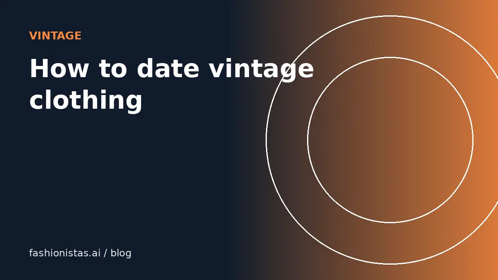

How to date vintage clothing from its labels, zippers and seams

'Vintage' gets used for anything that looks old, and buyers know it. Being able to date a piece roughly, and explain why, makes you a more confident buyer and a more trusted seller. This guide covers the clues that experienced vintage sellers check first: labels, care tags, RN numbers, zippers, stitching and fabric.
What counts as vintage?
There's no legal definition, but common usage in resale is:
- Vintage: roughly 20 years old or more. Etsy uses this threshold for its vintage category.
- Antique: 100 years or older.
- Retro or vintage-style: new items made to look old.
So in 2026, clothing from about 2006 or earlier is commonly called vintage. Many collectors are more interested in specific eras, such as 1950s dresses, 1970s denim, 1980s and 1990s streetwear, or Y2K pieces.
Care labels: one of the best date clues
In the US, the Federal Trade Commission's Care Labeling Rule took effect in 1971, requiring garments to carry permanent care instructions. That gives you a useful rule of thumb:
- No care label at all suggests a garment may predate the early 1970s, especially if other clues agree. Labels can also be cut out, so check for stitching where one was removed.
- Written care instructions without symbols are typical of US garments from the 1970s through the 1990s.
- Care symbols (the washtub, triangle, iron and circle icons) became common on US garments from the late 1990s onward, after the FTC allowed symbols in place of words in 1997.
Fiber content labels came earlier: the Textile Fiber Products Identification Act took effect in 1960, so US garments from after that usually list fiber content.
RN numbers and union labels
RN numbers. Many US garments carry an "RN" (Registered Identification Number) on the label. The FTC began issuing RN numbers in 1959. The number identifies the company, not the item, and you can look it up in the FTC's RN database to find the business name. Lower numbers were issued earlier, which helps place a garment roughly in time, though a company can keep using its number for decades.
Union labels. Labels from the ILGWU (International Ladies' Garment Workers' Union) appear in a lot of US-made womenswear from the 20th century. The label design changed over the decades, so collectors use the style and colors of the ILGWU label to narrow down the era. The union merged into another organization in 1995, so an ILGWU label suggests a garment made before the mid-1990s.
A "Made in USA" label is also a clue. US clothing production fell sharply from the 1990s onward, so a lot of US-made clothing in thrift stores is older.
Zippers
- Metal zippers were standard for decades. A metal zipper on a dress or skirt suggests an older garment, roughly pre-1960s, though metal zippers are still used in jeans and outerwear today.
- Nylon or plastic coil zippers became common in the 1960s and later.
- Brand stamps on the zipper pull, such as Talon, Scovill, Conmar or Lightning, are classic clues on mid-century American garments. Talon zippers were very common on US clothing from the 1930s through the 1970s.
- Side zippers on dresses were common in the mid-century before center back zippers took over.
A zipper can be replaced, so use it as one clue among several.
Stitching and construction
- Single-stitch T-shirts. Many T-shirts made before the mid-1990s have a single line of stitching on the sleeve and bottom hems. Double stitching became standard afterward. This is one of the most-cited clues for vintage band and graphic tees, although some modern reproductions copy it.
- Serged seams. Overlocked seam edges became widespread in home and factory sewing from the 1960s onward. Older garments often have pinked, bound or hand-finished seams.
- Hand finishing. Hand-stitched hems, buttonholes and linings suggest older or higher-end construction.
- Generous seam allowances were common in mid-century clothing, made to allow alterations.
Fabric and style clues
- Polyester double knit is strongly associated with the late 1960s and 1970s.
- Acrylic knitwear became common from the 1950s and 1960s onward.
- Spandex or elastane in everyday clothing became widespread from the 1980s.
- Shoulder pads suggest the 1980s or early 1990s in womenswear.
- Silhouettes: full skirts and nipped waists for the 1950s, mod shifts in the 1960s, flares in the 1970s, oversized shapes in the 1980s and 1990s.
Style alone can mislead, because fashion revives itself. A 1990s dress copying the 1960s is still from the 1990s. Combine style with labels and construction.
Graphic tees and printed dates
For vintage T-shirts, the print often helps. Copyright dates on the print (for example "© 1989") tell you the earliest year the design was printed, though not when that particular shirt was made; reprints exist. Check the tag brand too: certain blank-shirt makers and tag designs are associated with particular decades, and collectors catalog them. Combine the tag, the print date, single or double stitching, and the fabric. A 50/50 cotton-poly blend that feels thin and soft is typical of many 1980s tees.
A quick dating checklist
- Is there a care label? Words or symbols?
- Is there an RN number? Look it up.
- Union label? Which style?
- Zipper: metal or nylon? Branded?
- Seams: serged or finished another way?
- Stitching on T-shirt hems: single or double?
- Fabric content and feel.
- Silhouette and details.
Write down what you found. If most clues point to the same decade, you can describe the piece confidently. If they conflict, say "likely" or give a range, such as "70s to early 80s". Honesty about uncertainty is better than an overconfident claim a collector can disprove.
Pricing and listing vintage
Once you've dated a piece, say how in the listing: "single-stitch hems, made in USA, 1980s copyright date on the print". That kind of detail builds trust and attracts collectors searching for exactly those terms.
Use measurements instead of the label size, because vintage sizing runs small. Price from sold comps of similar era and condition; our pricing guide explains how. Photograph the labels, zipper and stitching clearly; these photo tips help. The listing tool can draft a description from your photos, which you can then refine with what you know about the era.
FAQ
How do I tell how old a piece of clothing is?
Check several clues together: the care label (US care labels became required in 1971), RN number, union label, zipper type, stitching and fabric. No single clue is definitive, but several pointing the same way give a confident estimate.
What does an RN number tell you?
An RN number identifies the US company that made or sold the garment. RN numbers have been issued by the FTC since 1959, and you can look them up in the FTC database.
Does a single-stitch T-shirt mean it's vintage?
Single stitching on hems is common on T-shirts made before the mid-1990s, but some modern reproductions copy it. Check the tag, print and other details too.
How old does clothing have to be to be vintage?
In resale, about 20 years or older is commonly called vintage; Etsy uses this threshold. Antique usually means 100 years or older.
Do vintage clothes have care labels?
Garments made in the US after the FTC Care Labeling Rule took effect in 1971 usually do. Earlier garments often don't, though labels can also be cut out.